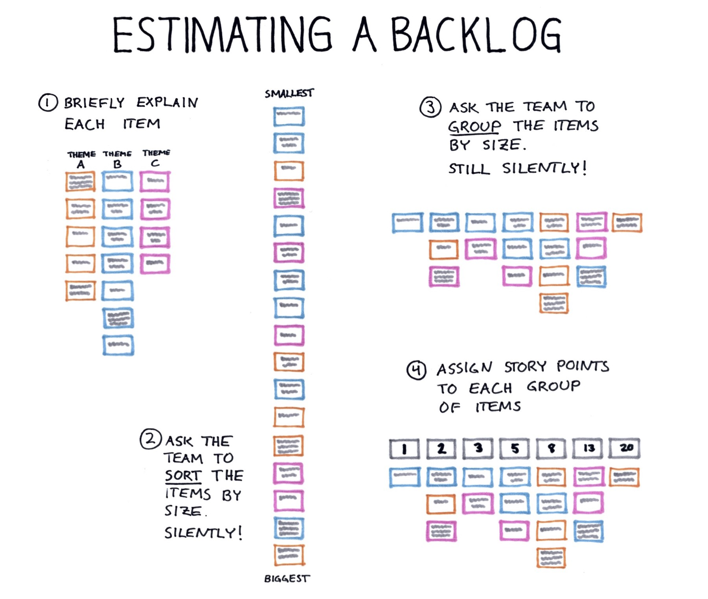

A quick way to estimate a whole product backlog

Early on, when starting a new project, we will have a product backlog (or the starting point of one) but without estimates. To be able to create a first release plan, burn down chart and so on, we will want to get at least rough estimates for all these items. If using planning poker, we will end up spending several hours but is there any alternative?
In a workshop a few years ago, I learned a simple, much quicker way, which I have been using successfully since. This method is based on the fact that while it is hard to give estimates in absolute numbers, it is often much easier to compare one item to another and decide which one is bigger.
For a backlog with 30 items, a one-hour meeting is usually sufficient.
The steps of this meeting are as follows:
- Set the scene
- Do a quick run-through of each item
- Get the team to sort the items by size. Silently!
- Get the team to group items of a similar size. Still silently!
- Assign numbers to the groups of items
I’ve found to my surprise that the results are pretty much exactly as reliable as those we’ve spent hours and hours agreeing on. Sure, some numbers will be too big and some will be too small and will end up getting adjusted later, but on average they tend to work out alright.
0. Set the scene
Start by explaining to the team that you want to use a quick method to get an initial estimate for each item on the backlog. Also, point out why these estimates are needed (for example, will you be using them to calculate the return of investment when prioritising the backlog?). Also, explain that there will not be much time to discuss the finer details of the stories, but that this is fine as the intention is to just get rough numbers. There will be opportunities to revise the numbers in the future when we know more about the stories.
1. Briefly explain each item
Next, go through each item on the backlog, including the acceptance criteria, but spend a maximum of 90 seconds per item when doing so, including any questions and clarifications. It may be challenging at first, but if you come well prepared it is possible.
For this to work, you as the facilitator will need to be fully familiar with each backlog item. You also need to have prepared an index card for each item, with a short title on each. If the items in the backlog are expressed as user stories in the backlog, I’d still suggest sticking to just a title on the front of the card and writing the story on the backside so you can read it out during the run-through.
When going through the items, you will want to ignore whatever order they may have in the backlog and instead group them into chunks that make sense when you talk about them (you don’t have much time for context switching).
In terms of acceptance criteria, make sure you have a concise list to run through or, even better, write it on the back of each card and read it from there. If there are designs or wireframes, you may want to show these too to illustrate what you are talking about.
2. Ask the team to sort the items by size. Silently!
The next step is to ask the team to sort all the cards into one line, with the item with the smallest effort required at one end of the table and the largest at the other. However, and this is where it gets interesting, they must be completely quiet when doing it!
Encourage the team to move around the table and make sure they look at the whole line of cards so they don’t get stuck at one end of the table. If they disagree with where a card is placed, they can simply move it to what they think is the right place.
After just a few minutes, the cards will have stopped moving around and we’ve got our list of backlog items ordered by size.
3. Ask the team to group stories of a similar size. Still silently!
Once all items have been sorted by size, the next step is to put them into groups of similar size.
It is usually about right to have 7 groups, so place 7 empty index cards or estimation cards facing down to mark each group. Then ask the team to place the items into these groups so that each group contains items of a similar size, the group to the left of it contains stories that are smaller and the one on the right bigger. And they should still be quiet while they do this.
4. Assign numbers to the groups of items
Finally, it is time to assign an estimate in story points for the items in each group. If you have no previous estimates or velocity to take into account, this is simple. Just give all the items in the group to the far left an estimate of 1 story point, the next 2, then 3, 5, 8 and so on (or whatever sequence of numbers you use). Done!
However, if you already have estimates for other stories, place a few examples the team will be familiar with into their respective group, based on their estimate (maybe some items from the current sprint), and check with the team if it feels about right. If not, they will need to move things around (maybe merging or splitting some groups) until it feels right.
So, there you have it. A quick and simple way to estimate your whole backlog. As I wrote in the introduction, I’ve found this method to work surprisingly well, given the short time it takes. Sure, some estimates will change later when we look at them in a bit more detail during our backlog refinement sessions but that’s not much different from if we had taken the plunge and done full estimation poker on the lot.
♻️ I republished this blog post here 22 November 2019 with minimal changes. The date below is when it was originally published on my old blog.
Back to blog

This work by Magnus Dahlgren is licensed under a Creative Commons Attribution 4.0 International License.